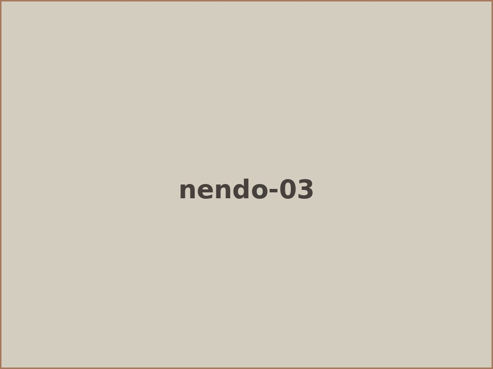
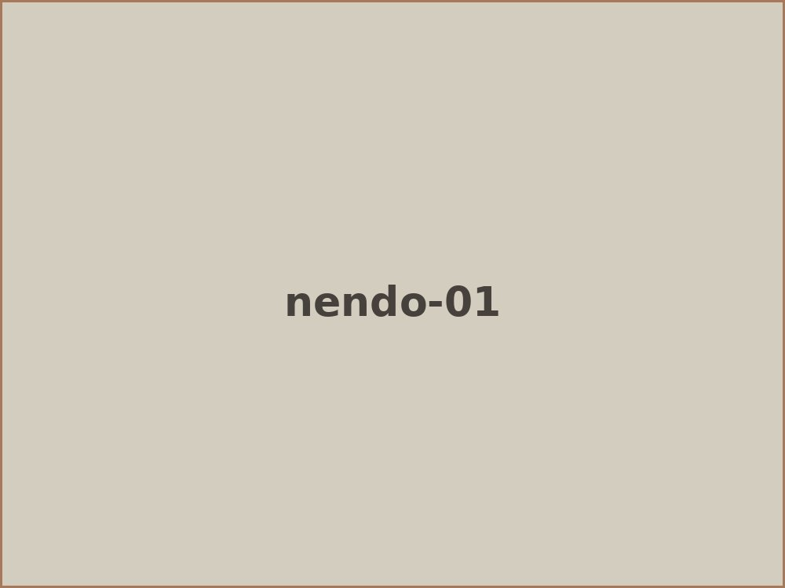

何か物作りをする時は 粘土や石に直に触れているので 手が荒れたりすることがありますね。 陶芸教室の時に 「粘土は手が荒れますか？」 と聞かれることがあります。 何がいちばん手が荒れるかは 人によって違う気がするので 触れてみないとわからないところは あります。
自分がいちばん荒れるな、と感じるのは 石を磨く砥石を使っている時ですね。 作品の仕上げの時期になると ずっと砥石で磨いているので だんだん手が痒くなって湿疹のような物ができてきます。 これは自分だけかもしれませんが 以前からずっとそうなるので 自分の場合は砥石ってことになりますね。
ちなみに 手が荒れるといえば 粘土よりも園芸用の土が いちばんガサガサになります。 何故かわかりませんが 素手で植え替えなどをしていると すぐにガサガサになってしまいます。
ですが、直に素材に触れて そのひんやりした感じや暖かみなどの 感触を楽しむのも ものつくりの楽しみのひとつだと思っています。

